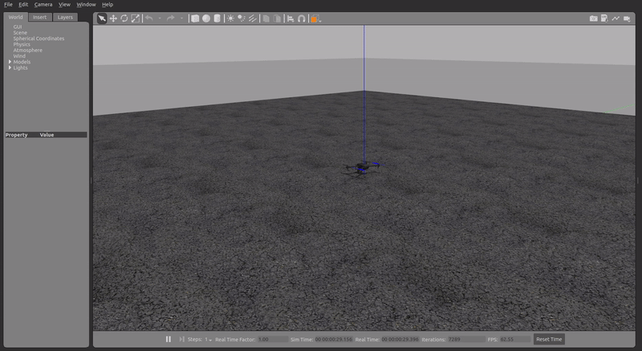

Drone Control Stack Setup
This section describes the steps followed to install the drone control stack on the onboard computer. This stack is composed of ROS packages which allow the vehicle to be controlled from ROS nodes using the available cpp UAV class. It should be noted that the steps described include everything that is needed to run simulations in adition to controlling the real drone.
Environment Setup
Before installing the ROS packages, it is necessary to create a workspace and install the PX4 firmware (only used for simulations).
-
Creating a catkin workspace
mkdir ~/uav/uav_ws/src cd ~/uav/uav_ws catkin_make -
Installing the PX4 firmware
cd ~/uav git clone --recursive https://github.com/PX4/PX4-Autopilot.git cd PX4-Autopilot git fetch --all --tags git checkout v1.12.3 -b latest git submodule update --init --recursive make px4_sitl gazebo
Note
While installing the PX4 firmware, some missing packages might need to be installed with pip. If pip is not available it can be installed with sudo apt install python3-pip.
-
In order not to pollute the
bashrcprofile, a script was created to load the needed environment variablescd ~/uav touch setup.bash -
Contents of the
setup.bashfilesource ~/uav/uav_ws/devel/setup.bash export CATKIN_WORKSPACE=~/uav/uav_ws export GAZEBO_PLUGIN_PATH=$GAZEBO_PLUGIN_PATH:/home/jetson/uav/PX4-Autopilot/build_gazebo export GAZEBO_MODEL_PATH=$GAZEBO_MODEL_PATH:/home/jetson/uav/PX4-Autopilot/Tools/sitl_gazebo/models export LD_LIBRARY_PATH=$LD_LIBRARY_PATH:/home/jetson/uav/PX4-Autopilot/build_gazebo export ROS_PACKAGE_PATH=$ROS_PACKAGE_PATH:/home/jetson/uav/PX4-Autopilot:/home/jetson/uav/PX4-Autopilot/Tools/sitl_gazebo source /home/jetson/uav/PX4-Autopilot/Tools/setup_gazebo.bash /home/jetson/uav/PX4-Autopilot /home/jetson/uav/PX4-Autopilot/build/px4_sitl_default
Control Stack Overview
Now that the environment is prepared, the code stack can be installed inside the created workspace. Below is a tree view of all the packages included in the stack. The packages listed here are available in this repository.
src/
├── drone_bringup
├── drone_gazebo
│ ├── drone_description
│ └── drone_worlds
├── drone_launch
└── drone_library
├── drone_gimmicks_library
├── drone_utils_cpp
└── mavros_cpp
Simulation flow
graph TD
A(<b>simulator_bringup.launch</b> <br> drone_launch) --> B(<b>vehicle_bringup.launch</b> <br> drone_launch);
A --> C(<b>empty_world.launch</b> <br> gazebo_ros);
A -. simulator_bringup_rviz.launch .-> G(<b>rviz</b> <br> rviz);
B --> D(<b>single_vehicle_spawn.launch</b> <br> drone_launch);
B --> E(<b>px4.launch</b> <br> mavros);
B --> F(<b>drone_sim.launch</b> <br> drone_bringup);Real mission flow
graph TD
A(<b>real_bringup_rviz.launch</b> <br> drone_launch) --> B(<b>px4.launch</b> <br> mavros);
A --> C(<b>drone_sim.launch</b> <br> drone_bringup);
A --> G(<b>rviz</b> <br> rviz);ROS Packages Overview
drone_bringup
The drone_sim.launch file loads the vehicle and main algorithm parameters and calls the ROS node that has the mission to be carried out.
src/drone_bringup/
├── CMakeLists.txt
├── config
│ └── simulation
│ └── iris
│ └── config.yaml
├── launch
│ └── drone_sim.launch
└── package.xml
drone_description
The drone_description package contains the Gazebo models for the vehicles used.
src/drone_gazebo/drone_description/
├── CMakeLists.txt
├── models
│ └── iris
│ ├── iris.sdf.jinja
│ ├── iris.urdf
│ ├── meshes
│ │ ├── iris_prop_ccw.dae
│ │ ├── iris_prop_cw.dae
│ │ └── iris.stl
│ └── model.config
├── package.xml
└── scripts
├── jinja_gen.py
├── names.py
├── schema_download.bash
├── substitution_args.py
└── validate_sdf.bash
drone_worlds
The drone_worlds package contains the world files that can be used during simulations in Gzaebo.
src/drone_gazebo/drone_worlds/
├── CMakeLists.txt
├── package.xml
└── worlds
├── baylands.world
├── boat.world
├── empty.world
├── hippocampus.world
├── hitl_iris.world
├── hitl_standard_vtol.world
├── iris_irlock.world
├── ksql_airport.world
├── mcmillan_airfield.world
├── ocean.world
├── sonoma_raceway.world
├── typhoon_h480.world
├── uuv_bluerov2_heavy.world
├── uuv_hippocampus.world
├── warehouse.world
├── windy.world
└── yosemite.world
drone_launch
The drone_launch package contains several launch files that are used to run simulations and to run missions with the real drone.
src/drone_launch/
├── CMakeLists.txt
├── launch
│ ├── real_bringup_rviz.launch
│ ├── rvizcfg.rviz
│ ├── simulator_bringup.launch
│ ├── simulator_bringup_rviz.launch
│ ├── single_vehicle_spawn.launch
│ └── vehicle_bringup.launch
└── package.xml
drone_gimmicks_library
The drone_gimmicks_library package contains some useful macros to reduce the complexity of some common ROS operations like getting parameters.
src/drone_library/drone_gimmicks_library/
├── CMakeLists.txt
├── include
│ └── drone_gimmicks_library
│ └── DroneGimmicks.h
├── package.xml
└── src
└── DroneGimmicks.cpp
drone_utils_cpp
The drone_utils_cpp package contains some useful functions while working with drones, like converting between different coordinate frames and normalizing thrust values.
src/drone_library/drone_utils_cpp/
├── CMakeLists.txt
├── doc
│ └── README.md
├── include
│ └── drone_utils_cpp
│ ├── DroneInfo.h
│ ├── DroneStatus.h
│ └── Utils.h
├── package.xml
└── src
└── Utils.cpp
mavros_cpp
The mavros_cpp package contains the main class (UAV) which is used to control the drone as well as to get telemetry data.
src/drone_library/mavros_cpp/
├── CMakeLists.txt
├── doc
│ └── README.md
├── include
│ └── mavros_cpp
│ ├── Actuators.h
│ ├── EKF.h
│ ├── Sensors.h
│ └── UAV.h
├── package.xml
└── src
├── offboard.cpp
├── telemetry.cpp
└── UAV.cpp
Simulation example
After installing the code stack the provided lissajous example package can be executed in simulation. The drone_sim.launch file in the drone_bringup package should contain a call to the lissajous ROS node like so - <node pkg="lissajous" type="lissajous_node" name="lissajous" respawn="false" output="screen"/>.
-
Build the workspace
cd ~/uav/uav_ws catkin_make -
Source the provided bash script
cd ~/uav source setup.bash -
Run the simulation
roslaunch drone_launch simulator_bringup.launch